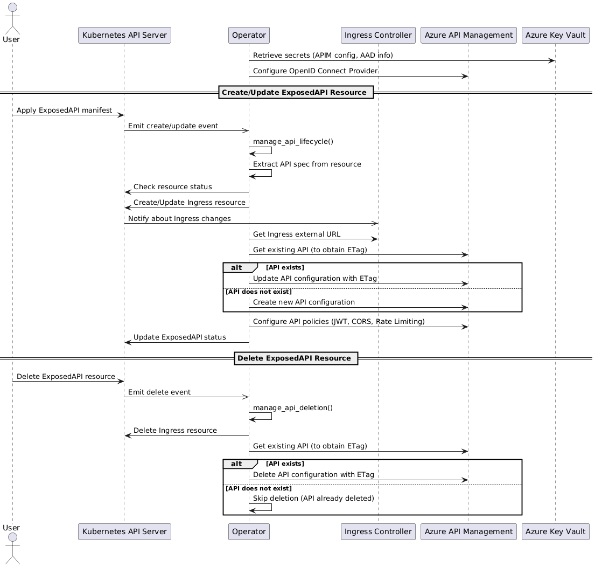

Overview
The API Operator for Azure API Management (APIM) is a Kubernetes operator designed to automate the exposure of Kubernetes services as APIs through Azure APIM. Built using the Kopf (Kubernetes Operator Framework), the operator listens for custom resource events and manages the lifecycle of APIs in APIM accordingly. It integrates with Azure Entra ID for authentication, applies API policies such as JWT validation, rate limiting, and CORS, and manages Ingress resources within an Istio service mesh in an Azure Kubernetes Service (AKS) cluster.
This detailed description delves into the internal workings of the operator, its architecture, key components, event handling mechanisms, code structure, and interactions with Azure services.
Operator Architecture
High-Level Overview
At a high level, the operator functions as an event-driven automation tool within the Kubernetes cluster:
Event Listener: It listens for creation, update, and deletion events of custom resources (ExposedAPI).
Event Handler: Upon detecting an event, it executes predefined functions to manage resources.
Resource Manager: It creates or updates Kubernetes Ingress resources and configures APIs in Azure APIM.
Policy Enforcer: It applies API policies in APIM, ensuring consistent security and operational standards.
Status Reporter: It updates the status of custom resources to reflect the current state of the API exposure process.
Lifecycle flow

Key Interactions
Kubernetes API: The operator interacts with the Kubernetes API to manage custom resources, Ingresses, and update resource statuses.
Azure Services: It uses Azure SDKs to interact with Azure APIM, Key Vault, and Entra ID.
Istio Service Mesh: Operates within an Istio-enabled cluster, ensuring that internal service communications are secured via mutual TLS (mTLS).
Key Components
1. Custom Resource Definition (CRD): ExposedAPI
Defines the schema for the custom resource that users create to expose an API. It includes specifications like the API path, OpenAPI specification, implementation details, and policy configurations.
CRD Schema:
apiVersion: apiextensions.k8s.io/v1
kind: CustomResourceDefinition
metadata:
name: exposedapis.oda.tmforum.org
spec:
group: oda.tmforum.org
versions:
- name: v1beta3
served: true
storage: true
schema:
openAPIV3Schema:
type: object
properties:
spec:
type: object
properties:
path:
type: string
specification:
type: string
implementation:
type: string
port:
type: integer
rateLimit:
type: object
CORS:
type: object
scope: Namespaced
names:
plural: exposedapis
singular: exposedapi
kind: ExposedAPI
2. Event Handlers
The operator defines handlers for the following events:
Create: Triggered when a new ExposedAPI resource is created.
Update: Triggered when an existing ExposedAPI resource is modified.
Delete: Triggered when an ExposedAPI resource is deleted.
3. Azure Clients
Azure Key Vault Client: Retrieves secrets required for authentication and APIM configuration.
Azure APIM Client: Manages APIs and policies in Azure APIM.
Azure Entra ID Integration: Configures OpenID Connect providers and authentication settings in APIM.
4. Kubernetes API Clients
CustomObjectsApi: Interacts with custom resources to get and update their statuses.
NetworkingV1Api: Manages Ingress resources.
ApiException Handling: Handles exceptions when interacting with the Kubernetes API.
5. Logging
Configurable logging levels (INFO, DEBUG, etc.) to monitor operator activities.
Uses Python’s built-in logging module.
Event Handling Workflow
1. Creation and Update Events
When a new ExposedAPI resource is created or updated:
Extract API Specifications: The operator reads the specifications from the custom resource.
Ingress Management:
Create or Update Ingress: Generates an Ingress resource to route traffic to the specified service.
Ingress Manifest: Includes the necessary annotations and rules to integrate with the cluster’s ingress controller (e.g., Istio).
Azure APIM Configuration:
Retrieve Backend URL: Gets the external URL from the Ingress to use as the backend service URL in APIM.
Create or Update API in APIM:
API Parameters: Constructs parameters including display name, path, OpenAPI specification, and backend URL.
Authentication Settings: Configures OAuth 2.0 authentication using the OpenID Connect provider.
Import OpenAPI Specification: Imports the provided OpenAPI spec into APIM.
Apply API Policies:
JWT Validation: Ensures that incoming requests have valid JWT tokens issued by Azure Entra ID.
Rate Limiting: Applies rate limiting policies based on the specifications.
CORS Configuration: Sets up CORS policies to control cross-origin requests.
Status Update:
Update Custom Resource Status: Modifies the status subresource of the ExposedAPI to reflect the current state and any relevant information.
Handle Exceptions: If any step fails, the operator logs the error and may retry based on the retry policy.
2. Deletion Event
When an ExposedAPI resource is deleted:
Ingress Deletion: Deletes the associated Ingress resource from the cluster.
APIM Cleanup:
Delete API from APIM: Removes the API configuration from Azure APIM.
Handle Non-existence: If the API does not exist in APIM, logs the information and proceeds.
Logging: Records the successful deletion of resources or any errors encountered.
Code Structure and Functions
1. Imports and Initialization
Libraries:
kopf: For Kubernetes operator functionality.
kubernetes.client: Interacting with Kubernetes API.
azure.identity: For Azure authentication.
azure.keyvault.secrets: Accessing Key Vault secrets.
azure.mgmt.apimanagement: Managing APIM resources.
Logging Configuration: Sets the logging level based on an environment variable.
Environment Variables:
KEY_VAULT_NAME: Name of the Azure Key Vault.LOGGING: Logging level.
Azure Key Vault Client Initialization: Uses DefaultAzureCredential to authenticate and access secrets.
2. Azure APIM Configuration
OpenID Connect Provider Setup: Ensures that an OpenID Connect provider is configured in APIM for Azure Entra ID.
Function:
create_openid_connect_provider()
3. Event Handlers
Create and Update Handler
Function:
manage_api_lifecycle()Parameters:
spec: The specifications from the custom resource.
name: Name of the custom resource.
namespace: Namespace where the resource is deployed.
status: Current status of the resource.
Workflow:
Extracts API specifications.
Checks if an update is necessary by comparing the current spec with the status.
Calls create_or_update_ingress() to manage the Ingress resource.
Calls update_apim() to configure the API in APIM.
Updates the custom resource’s status.
Delete Handler
Function:
manage_api_deletion()Parameters:
meta: Metadata of the custom resource.
name: Name of the custom resource.
namespace: Namespace where the resource was deployed.
Workflow:
Deletes the Ingress resource using delete_ingress().
Deletes the API from APIM.
Logs the deletion activities.
4. Ingress Management Functions
Create or Update Ingress
Function:
create_or_update_ingress()Parameters:
spec, name, namespace, meta
Workflow:
Constructs the Ingress manifest with necessary annotations and rules.
Adopts the resource to ensure proper ownership.
Checks if the Ingress exists:
If it exists, updates it.
If it doesn’t, creates a new one.
Handles exceptions and logs accordingly.
Delete Ingress
Function:
delete_ingress()Parameters:
name, namespace
Workflow:
Attempts to delete the Ingress resource.
Handles exceptions if the resource does not exist.
5. Azure APIM Interaction Functions
Update APIM
Function:
update_apim()Parameters:
api_spec, namespace
Workflow:
Retrieves the backend service URL from the Ingress.
Constructs API parameters, including authentication settings.
Checks if the API exists in APIM and retrieves the ETag.
Creates or updates the API in APIM, using the ETag for concurrency control.
Calls configure_apim_policies() to apply policies.
Configure APIM Policies
Function:
configure_apim_policies()Parameters:
api_id, api_spec
Workflow:
Extracts policy configurations from api_spec.
Constructs the policies XML, including JWT validation, rate limiting, and CORS.
Updates the API policies in APIM.
Get Ingress URL
Function:
get_ingress_url()Parameters:
api_name, namespace, path
Workflow:
Retrieves the Ingress resource.
Extracts the external IP or hostname.
Constructs the backend URL using the scheme (http or https) and the path.
Handles exceptions if the Ingress does not have a load balancer IP or hostname.
6. Exception Handling
Kubernetes API Exceptions: Uses ApiException to handle errors when interacting with Kubernetes resources.
Azure Exceptions: Catches AzureError and ResourceNotFoundError for Azure service interactions.
Retries: Uses kopf.TemporaryError for retryable errors, allowing the operator to retry failed operations based on the retry policy.
7. Logging
Uses the logging module to log information, warnings, and errors.
Logs important events like resource creation, updates, deletions, and any errors encountered.
Interaction with Azure Services
1. Azure Key Vault
Purpose: Securely retrieves secrets required for operator functionality, such as APIM service name, resource group, subscription ID, Azure Entra ID tenant and client IDs.
Authentication: Uses DefaultAzureCredential to authenticate with Azure, supporting various authentication methods (managed identity, environment variables, etc.).
Error Handling: Catches and logs AzureError exceptions during secret retrieval.
2. Azure API Management (APIM)
API Management: Uses the ApiManagementClient from the Azure SDK to create, update, and delete APIs in APIM.
OpenID Connect Provider: Configures an OpenID Connect provider for Azure Entra ID to enable OAuth 2.0 authentication.
Policies: Applies policies to APIs for authentication, rate limiting, and CORS.
Concurrency Control: Uses ETags to handle concurrent updates to APIs.
3. Azure Entra ID
Authentication Settings: Configures APIs in APIM to use Azure Entra ID for authentication.
JWT Validation: Applies policies in APIM to validate JWT tokens issued by Azure Entra ID.
Security Considerations
1. Secrets Management
Azure Key Vault: All sensitive information is stored in Azure Key Vault.
Access Control: Operator uses managed identities to access Key Vault, minimizing the need for explicit credentials.
3. Secure Communication
Istio Service Mesh: Uses mTLS for secure service-to-service communication within the cluster.
Ingress TLS: Ensures that external communications are encrypted.
4. Network Policies
Ingress Restrictions: Configures network policies to restrict access to services only from allowed sources (e.g., APIM).
Testing and Debugging
1. Logging
Adjust the LOGGING environment variable to set the desired logging level (e.g., DEBUG) for more verbose output.
2. Operator Logs
View operator logs using:
kubectl logs <apioperatorazureapim-pod-name> -n operators
3. Kubernetes Events
Inspect events in the cluster for issues related to resource creation or updates:
kubectl get events -n <namespace>
4. Azure APIM Diagnostics
Use APIM diagnostics to troubleshoot issues with API configurations or policy applications.
5. Exception Messages
The operator logs detailed exception messages, which can help identify the root cause of failures.
Limitations and Future Enhancements
1. Error Handling
Retries: Currently uses kopf.TemporaryError with specified retries. Consider implementing exponential backoff strategies.
2. Scalability
Concurrency: Ensure the operator can handle multiple events efficiently, possibly by scaling replicas.
3. Extensibility
Additional Policies: Support for more complex policies or custom policy templates.
Custom Authentication Providers: Extend support for other authentication mechanisms beyond Azure Entra ID.
4. Configuration Management
Parameterization: Make certain configurations (e.g., default rate limits, CORS settings) more easily customizable.
5. Observability
Metrics Exporter: Implement metrics exporting for monitoring operator performance.
Conclusion
The API Operator for Azure API Management streamlines the process of exposing Kubernetes services as APIs in Azure APIM. By automating the creation and management of necessary resources and configurations, it reduces manual efforts and ensures consistency across deployments. Its integration with Azure services and adherence to security best practices make it a valuable tool for organizations leveraging Kubernetes and Azure for their application infrastructure.
Key Takeaways:
The operator leverages Kubernetes-native constructs (custom resources) to manage API exposure.
It tightly integrates with Azure services, utilizing managed identities and SDKs for secure operations.
The use of Kopf simplifies the development of the operator, providing robust event handling capabilities.
Security is a primary focus, with mechanisms in place for secure secrets management, authentication, and network communication.